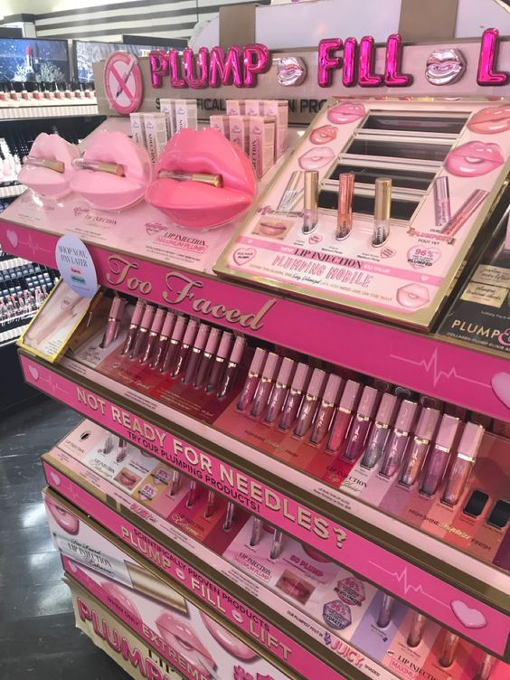
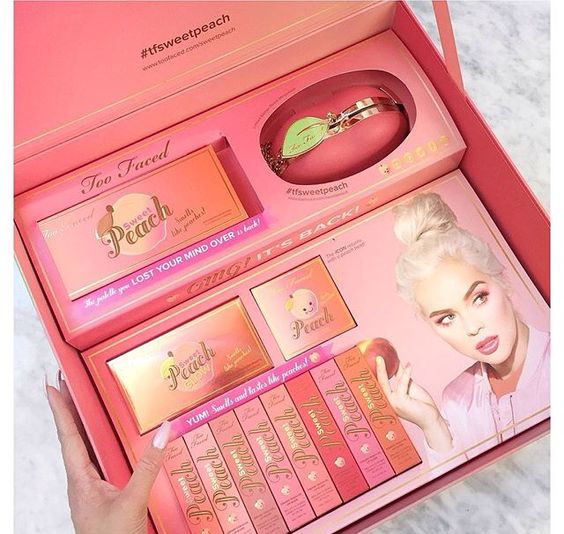

About Too Faced and More
The company sells a broad variety of cosmetics,
such as blushes, bronzers, foundations, lipsticks, eyeshadows, and more.
Particularly well-known are Too Faced's eyeshadow palettes, which frequently
include a range of tones with imaginative and entertaining themes.
Since Too Faced doesn't test its products on animals, it is renowned for being
cruelty-free. It also caters to customers who want vegan cosmetics by offering a
large number of vegan-friendly goods.
Too Faced WorldWide
Dispite having been founded in the United States, Too Faced products may be found all over
the world in department stores, beauty shops, laege retailers and online retailers.
The brand's popularity and general awareness have been significantly boosted
by its inteernational appeal.

More
Too Faced PR
Too Faced is always active on social media sites like instagram, where they
interact with their followrs and post information from behind the scenes, new launches,
and makeup tutorials. Their emphasis on self-expression, diversity, and innovation in
social media is consistant with their brand identity.
When PR gifts from Too Faced are received, the company encourages
the recipients to post
unpacking videos, images, and reviews on social media sites like Twitter, YouTube, and Instagram.
In addition to reaching a larger audience, this helps create enthusiasm and buzz
around the new items.

About Too Faced
About Too Faced and Products
The company sells a broad variety of cosmetics, such as blushes, bronzers, eyeshadows, lipsticks, mascaras, primers, eyeshadows, and foundations.
The eyeshadow palettes from Too Faced are especially well-known for their unique themes and beautifully pigmented colors.
Too Faced is well-known for its extraordinary and feminine packaging, which frequently has adorable and vibrant patterns.
Numerous items from them are packaged in eye-catching designs and unusual forms.